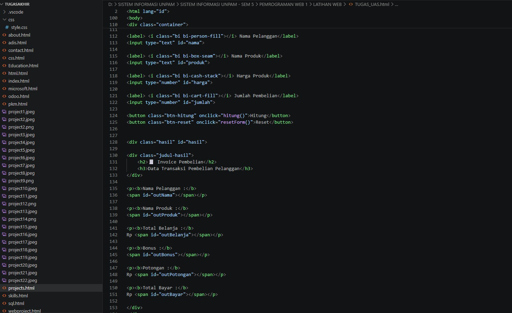

Web Sistem Perhitungan Harga merupakan aplikasi berbasis web yang saya kembangkan untuk mengotomatisasi proses kalkulasi harga berdasarkan data yang diinput oleh pengguna. Proyek ini menerapkan logika pemrograman untuk menghasilkan perhitungan yang cepat dan akurat, dilengkapi dengan antarmuka yang sederhana, responsif, dan mudah digunakan. Pengembangan sistem ini juga bertujuan untuk meningkatkan efisiensi serta meminimalkan kesalahan yang sering terjadi pada proses perhitungan secara manual.